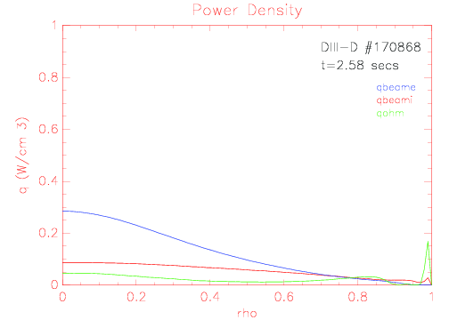
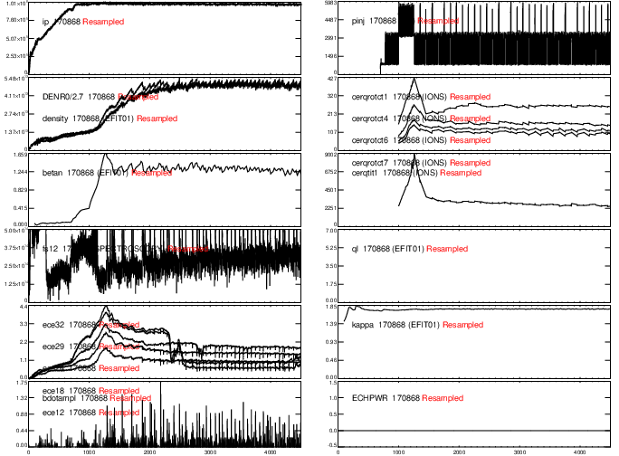

DIII-D #170868
Description
This H-mode discharge was part of an experiment designed to investigate various microinstabilities responsible for saturating the pedestal and investigate triggering mechanisms of type-I ELMs. This disharge has a NBI power of 2.2MW. The major plasma parameters are Bt=2.1T, Ip=1.0MA, kappa=1.78, and delta(u,l)=(0.24,0.42).
Data analysis
ONETWO run with 101 radial grid points.
ONETWO files:
Plot of power densities

Reviewplus time traces

Reference
K. Barada, T. Rhodes, et al., DIII-D PedELM Meeting, Sept. 9, 2020.